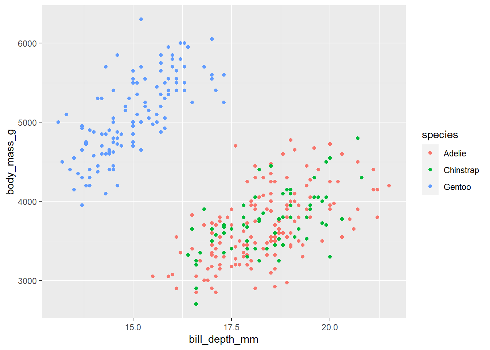

Intro
Vamos a utilizar datos del paquete palmerpenguins. El repo del paquete en CRAN está aquí, el repo de Github está aquí y la página web del paquete está aquí.
Los datos se pueden cargar en la memoria de de R/RStudio de esta forma:
El dataset contiene observaciones sobre un conjunto de 344 pingüinos de 3 especies. Hay 8 variables.
Los pingüinos molan
Vamos a ver una foto de un pingüinos

Sí, lo pingüinos molan, así que vamos a poner otra foto de pingüinos que tenemos en nuestro PC pero la vamos a poner en el margen:

Algunos gráficos
Bueno pues vamos a hacer algún gráfico, pero claro antes he de cargar los paquetes
Arreglo los datos
Primer gráfico
Código

Segundo
El último

Con esto acabo mi trabajo para BigData!!
Información sobre la sesión
Abajo muestro mi entorno de trabajo y paquetes utilizados
current session info
─ Session info ───────────────────────────────────────────────────────────────
setting value
version R version 4.2.2 Patched (2022-11-10 r83330)
os Ubuntu 22.04.3 LTS
system x86_64, linux-gnu
ui X11
language (EN)
collate es_ES.UTF-8
ctype es_ES.UTF-8
tz Europe/Madrid
date 2023-11-24
pandoc 3.1.1 @ /usr/lib/rstudio/resources/app/bin/quarto/bin/tools/ (via rmarkdown)
─ Packages ───────────────────────────────────────────────────────────────────
package * version date (UTC) lib source
cli 3.6.1 2023-03-23 [1] CRAN (R 4.2.2)
clipr 0.8.0 2022-02-22 [1] CRAN (R 4.2.2)
colorspace 2.1-0 2023-01-23 [1] CRAN (R 4.2.2)
desc 1.4.2 2022-09-08 [1] CRAN (R 4.2.2)
details 0.3.0 2022-03-27 [1] CRAN (R 4.2.0)
digest 0.6.31 2022-12-11 [1] CRAN (R 4.2.2)
dplyr * 1.1.2 2023-04-20 [1] CRAN (R 4.2.2)
evaluate 0.21 2023-05-05 [1] CRAN (R 4.2.2)
fansi 1.0.4 2023-01-22 [1] CRAN (R 4.2.2)
farver 2.1.1 2022-07-06 [1] CRAN (R 4.2.1)
fastmap 1.1.1 2023-02-24 [1] CRAN (R 4.2.2)
forcats * 1.0.0 2023-01-29 [1] CRAN (R 4.2.2)
generics 0.1.3 2022-07-05 [1] CRAN (R 4.2.2)
ggplot2 * 3.4.2 2023-04-03 [1] CRAN (R 4.2.2)
glue 1.6.2 2022-02-24 [1] CRAN (R 4.2.2)
gtable 0.3.3 2023-03-21 [1] CRAN (R 4.2.2)
hms 1.1.3 2023-03-21 [1] CRAN (R 4.2.2)
htmltools 0.5.5 2023-03-23 [1] CRAN (R 4.2.2)
htmlwidgets 1.6.2 2023-03-17 [1] CRAN (R 4.2.2)
httr 1.4.7 2023-08-15 [1] CRAN (R 4.2.2)
jsonlite 1.8.7 2023-06-29 [1] CRAN (R 4.2.2)
knitr 1.43 2023-05-25 [1] CRAN (R 4.2.2)
labeling 0.4.2 2020-10-20 [1] CRAN (R 4.2.2)
lattice 0.20-45 2021-09-22 [4] CRAN (R 4.2.0)
lifecycle 1.0.3 2022-10-07 [1] CRAN (R 4.2.1)
lubridate * 1.9.2 2023-02-10 [1] CRAN (R 4.2.2)
magrittr 2.0.3 2022-03-30 [1] CRAN (R 4.2.2)
Matrix 1.5-3 2022-11-11 [4] CRAN (R 4.2.2)
mgcv 1.8-41 2022-10-21 [4] CRAN (R 4.2.1)
munsell 0.5.0 2018-06-12 [1] CRAN (R 4.2.2)
nlme 3.1-162 2023-01-31 [4] CRAN (R 4.2.2)
palmerpenguins * 0.1.1 2022-08-15 [1] CRAN (R 4.2.1)
pillar 1.9.0 2023-03-22 [1] CRAN (R 4.2.2)
pkgconfig 2.0.3 2019-09-22 [1] CRAN (R 4.2.2)
png 0.1-8 2022-11-29 [1] CRAN (R 4.2.2)
purrr * 1.0.1 2023-01-10 [1] CRAN (R 4.2.2)
R6 2.5.1 2021-08-19 [1] CRAN (R 4.2.2)
readr * 2.1.4 2023-02-10 [1] CRAN (R 4.2.2)
rlang 1.1.1 2023-04-28 [1] CRAN (R 4.2.2)
rmarkdown 2.22 2023-06-01 [1] CRAN (R 4.2.2)
rprojroot 2.0.3 2022-04-02 [1] CRAN (R 4.2.2)
rstudioapi 0.14 2022-08-22 [1] CRAN (R 4.2.2)
scales 1.2.1 2022-08-20 [1] CRAN (R 4.2.2)
sessioninfo 1.2.2 2021-12-06 [1] CRAN (R 4.2.0)
stringi 1.7.12 2023-01-11 [1] CRAN (R 4.2.2)
stringr * 1.5.0 2022-12-02 [1] CRAN (R 4.2.2)
tibble * 3.2.1 2023-03-20 [1] CRAN (R 4.2.2)
tidyr * 1.3.0 2023-01-24 [1] CRAN (R 4.2.2)
tidyselect 1.2.0 2022-10-10 [1] CRAN (R 4.2.2)
tidyverse * 2.0.0 2023-02-22 [1] CRAN (R 4.2.2)
timechange 0.2.0 2023-01-11 [1] CRAN (R 4.2.2)
tzdb 0.4.0 2023-05-12 [1] CRAN (R 4.2.2)
utf8 1.2.3 2023-01-31 [1] CRAN (R 4.2.2)
vctrs 0.6.3 2023-06-14 [1] CRAN (R 4.2.2)
withr 2.5.0 2022-03-03 [1] CRAN (R 4.2.2)
xfun 0.39 2023-04-20 [1] CRAN (R 4.2.2)
xml2 1.3.4 2023-04-27 [1] CRAN (R 4.2.2)
yaml 2.3.7 2023-01-23 [1] CRAN (R 4.2.2)
[1] /home/pjpv/R/x86_64-pc-linux-gnu-library/4.2
[2] /usr/local/lib/R/site-library
[3] /usr/lib/R/site-library
[4] /usr/lib/R/library
──────────────────────────────────────────────────────────────────────────────